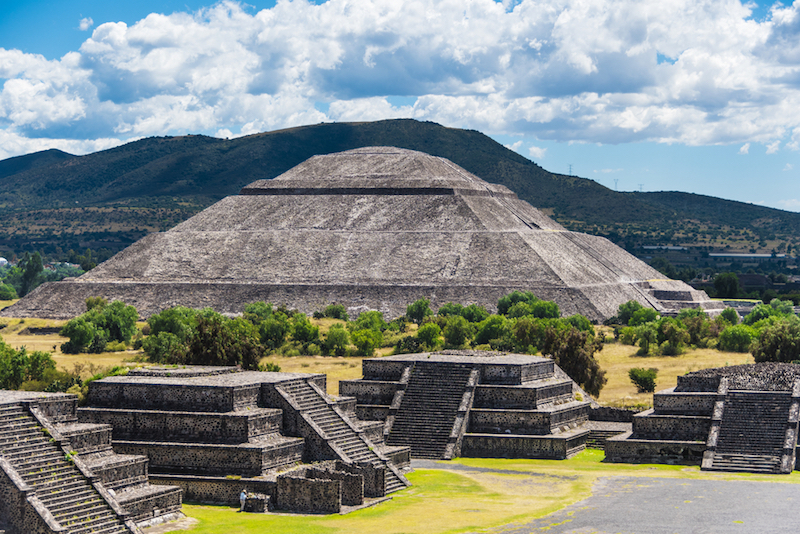
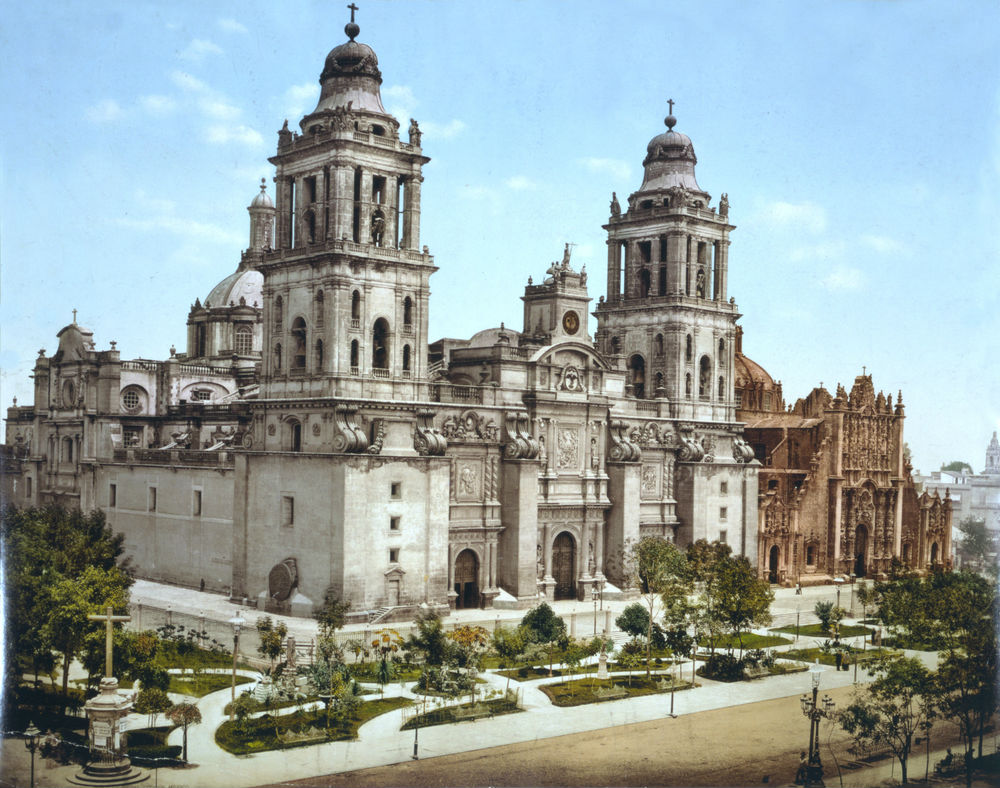

Periodo prehispánicoLas civilizaciones mesoamericanas lograron tener gran desarrollo estilístico y de proporción en la escala humana y urbana, la forma fue evolucionando de la simplicidad a la complejidad estética; en el norte del país se manifiesta la arquitectura de adobe y de piedra, la vivienda multifamiliar. Como la gran mayoría de las grandes metrópolis mesoamericanas, Monte Albán fue una ciudad con una población pluriétnica. A lo largo de su historia, la ciudad mantuvo vínculos muy fuertes con otros pueblos de gran importancia en Mesoamérica, en especial con los teotihuacanos durante el Clásico Temprano. La ciudad fue abandonada por la élite y buena parte de su población al final de la Fase Xoo. |
 |
Periodo VirreinalCon la llegada de los españoles se introdujeron teorías arquitectónicas del orden clásico y formalidades arábigas, al construirse los primeros templos y conventos monásticos; se proyectaron modelos únicos en su tipo que fueron la base de la evangelización de los pueblos indígenas marcando su ideología dentro del estilo arquitectónico denominado tequitqui (del náhuatl; obrero o alarife), años más tarde el barroco y el manierismo se imponen en grandes catedrales y edificios civiles, mientras que en zonas rurales se construyen haciendas o fincas señoriales con tendencias no tan mozárabes.
Dentro de estos edificios, repartidos por el centro del actual México y con ejemplos soberbios de maestría en la arquitectura y decoración, es posible hallar un arte originado tanto en la talla de la piedra como en la decoración pictórica: el arte tequitqui o indocristiano, una suerte de estilo hecho por los indígenas que construyeron los edificios basado en los patrones europeos y dirigidos por los frailes. |
 |